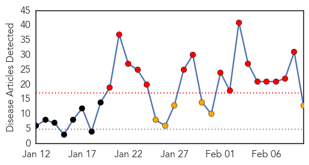

30 Day Trends
Web: 16 alerts, 6 warnings
Twitter: 0 alerts, 0 warnings
Top Articles:
- 1.000
- Must not ignore swine flu
- 0.998
- Swine flu in India: 92 deaths out of 897 cases in Rajasthan this year
- 0.995
- Swine flu toll rises to 38 in Maharashtra
- 0.994
- 58-year-old dies of swine flu, toll reaches two in Ludhiana
- 0.993
- Health Minister reviews swine flu situation in Gujarat
- 0.990
- AAP, UKD seek good medical care for swine flu patients
- 0.986
- Swine flu death toll mounts to 17 in Indore
- 0.983
- Union Health Minister JP Nadda Reviews Situation as Swine Flu Death Toll Rises to 98 in Gujarat
- 0.981
- Swine flu scare: 831 cases, 88 deaths in Gujarat Bhatkallys.com
- 0.976
- Gujarat swine flu toll 98; Nadda reviews situation
- 0.964
- Swine flu strikes city, 2 women test positive
- 0.941
- 48-year-old Vapi man dies of swine flu
- 0.907
- Dept. gears up to tackle situation
Top Tweets:
-
No tweets found for Feb 10, 2015
Web/News Articles
Tweets